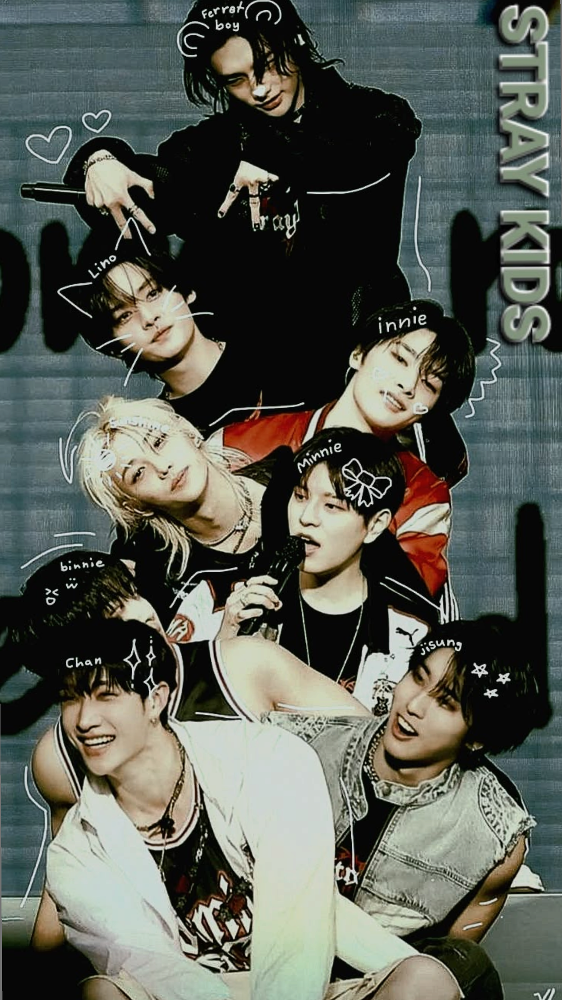

Jihokorejská k-popová skupina
Christopher Chahn Bahng (BangChan) - 28 years old
Lee Min-ho - 27 years old
Seo Chang-bin - 27years old
Hwang Hyun-jin - 26 years old
Han Ji-sung - 26 years old
Felix Yongbok Lee - 26 years old
Kim Seung-min - 25 years old
Yang Jeong-in - 25 years old

Skupina byla vytvořena v roce 2017 společností JYP Entertainment prostřednictvím reality show Stray Kids. Skupina debutovala 25. března 2018 s albem I Am NOT a single album. V roce 2019 vydali své první plnohodnotné album Go Live, které se stalo jejich prvním albem, které se dostalo na první místo v jihokorejském žebříčku Gaon Album Chart.